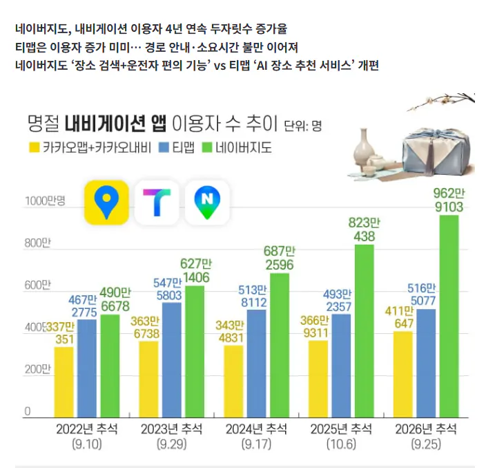

‘품질 논란’ 티맵, 네이버지도와 격차 벌어져
댓글
티맵네이버 좆지랄다해도 그냥 무조건 현기순정임
카플레이 사용 기준으로,
티맵: UI 기준으로는 제일 고급스러움. 길 안내는 엉망. 그래서 점수용으로 아는 길로 갈 때만 파워풀함... 아마도 정보가 없어서 색으로 표시할 수 없는 부분의 시간처리가 아직도 제대로 안돼서 엉망인듯
카카오맵: 길 안내 잘한다는 거 아는데 소리 땜에 택시 운전하는 느낌이 들어서 손이 안감...
네이버맵: 기능적으로 좋긴 한데, 보통 맛집 검색 이런걸 네이버로 하다보니까 네비 사용 중에 정보만 알기 위한 검색을 할 수 없어서 못쓰는 중
ㅋㅋㅋㅋ 택시 ㅋㅋ 아 이 느낌이였구나
왜인지 뭔가 기분이 이상하더라 ㅋㅋ
티맵 무료경로로 시작해도 자꾸 유료쪽으로 틀어서 개짜증나서 삭제해버림
같은 시에서 행정동만 이동하는데 왜 시발 자꾸 외곽 고속도로를 타게만드는거야 기껏해야 5분 빨라지는데 초행길일때 몇번 통수맞은 후로 정 존나 떨어짐
나는 북쪽 고정으로 쓰는데 티맵 저 병신같은 앱이 업데이트 하더니 북쪽 고정이어도 내 차의 위치가 아래에 있게 만들어 놓음....
남쪽으로 가면 앞에 뭐가 있는지 볼 수가 없음
ㅈ같아서 네이버로 넘어옴
카카오맵이랑 내비랑 길 알려주는게 살짝씩 다른 것 같더라
티맵~(인기꼬라박는톤으로)
요새 네이버 운전점수 어때?
현대 앱 99점 vs 티맵 97점 vs 네이버 65점 이지랄이었어서 안썼거든
나 지금 98점인데 상위 30퍼라 함 ㅋㅋㅋ 존나 후한듯. 티맵 82점... 6개월째 안올라 ㅠㅜ
현기 커넥트 5년 공짜기간엔 순정이 최고인듯
이거 끝나면 안드오토 연결해서 네이버 쓰던지 할듯
현기 순정이 난 최고던데
1. 예를들어 어디 도착지 찍으면 시간 제일 잘맞음
2. ㅈ같은 골목길 어디 나가지도못하는 이상한곳 안보냄
3. 어디 상호 찍으면 그곳 주차장으로 안내함
티맵쓰면 건너편으로 안내해주는경우도 있고 시간 존나 후려쳐서 도착시간 괴리감 존나큼
좀 모르는데 가면 사람인파 존나우굴거려서 지나가지도못하는곳으로 안내하고 이지랄함
현기 실시간 교통안내는 유료잖아
5년 공짜로 쓰고 새차 사라는거지
현기순정이 시간 제일 잘 맞더라
티맵은 티맵보험료할인용으로 휴대폰 백그라운드에 처박아놓고 현기 기본앱
최근 티맵 개병신같음
17년식 기아차도 순정이 낫나
어디 목적지 검색할때무조건 네이버지도 쓰다보니
검색하고 길안내까지 해버림
광고떡칠에 이름주소검색도 제대로안되는 병신앱을 아직도 저만큼이나 쓰다니
티맵 병신같은데 다른 거 쓰면 운전감각이 살짝 어긋나는 느낌나서 갈아타기가 힘들다 ㅅㅂ
네이버는 평소 네이버 지도에 저장한 장소들이 많아서 더 쓰게됨 티맵 맛탱이 간지 좀되긴 했고
카카오가 젤 낫더라
티맵 제일 구린게 뭔 이상한 광고 ㅈㄴ 많이 달아가지고 이제 앱이 버벅거림
길도 존나 못찾음
네이버 그냥 검색해서 가기 좋고
도착시간 젤 보수적으로 잡아서 시간 안늘어나는게 좋더라
티맵은 무슨 30분 일찍 도착하는걸로 잡아놓고 정작 40분늦게 도착함
티맵 자동으로 안전운전모드 전환되는 기능 없어지고부터 안씀.
티맵은 우회전 금지인곳에서 우회전하라고하고 유턴 못하는곳인데 유턴하라고함 제정신이아님
3년전까진 그건 네이버가 더심했음 그런건 유저풀이랑 쌓인 데이터가 중요한거라서 지금은 네이버 카카오쪽이 훨씬나은듯
광고 팝업을 2개나 꺼야 길찾기 가능한 ㅂㅅ 네비
네이버 은근 플랫폼 사업 잘 되는 듯?
뭐 특출나게 잘한다기보다 경쟁업체가 알아서 뒤지는터라
아틀란 화이팅!
난 조금 막히더라도 큰길로 편하게 가는걸 좋아하는데 네이버는 몇 년 살면서도 한번도 안가본 별 미친 길로 안내해서 안썼는데 요즘엔 괜찮아졌나?
티맵 갑자기 과속으로도 점수 너무 깎아대서 짜증남
난 그거때매 카카오로 일단 갈아타긴함
네이버 지도랑 연계돼서 네이버만 쓰는데
네이버 지도 저거는 아무 생각 없이 단거리 틀고 가면 점수 쫙쫙 떨어져서 ㅅㅂ..
현기 순정이 제일 좋더라 어차피 hud 없으면 운전 이제 불가능한 지경까지옴 ㅋㅋㅋㅋㅋㅋㅋㅋ
티맵은 보험 가입 해야 할 때만 씀
카카오가 대체적으로 빠르던데
네이버지도도 요새 자꾸 실험하드라?
한번 계속 이따구로 해봐라
바로 바꿔 버릴거여
티맵 점유율 보면 시장 선점이 얼마나 중요한지 알 수 있다 품질 개 쳐박아도 저만치 쓰는 사람들이 있는거 보면ㅋ ㅋ ㅋㅋ
네이버 점수 ㅈㄴ짜게주는느낌
그래도 티맵이 점수 제일 후해서 보험 점수용으로 씀
네이버 가끔 대중교통탈때 별 그지같은 경로로 알려줌 ㅅㅂ
대신 지하철 탈때 알람 잘 울려줘서 이용하긴하는중
초행길이면 카카오맵으로감